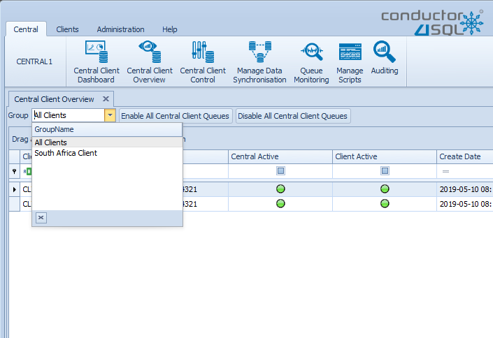

Central Client Overview
The Conductor4SQL Central Client overview button on the Central ribbon tab provides you a detailed overview of all installed clients, the groups they are in and the business attributes assigned to each client.
Tip
Ensure that the list of Clients is updated by clicking the Refresh button.
Client Overview Grid
The Central Client Control grid has the following columns:
- Client Name - The name of the client (either the ip address or dns server name combined with instance name)
- Route - The Tcp route that is being used for central to communicate with the client.
- Central Active - Indicates if all central queues are enabled for the client (green for all queues active red for one or more queues disabled).
- Client Active - Indicates if all client queues are enabled for the client (green for all queues active red for one or more queues disabled).
- Create Date - The date in which the client was installed
- Last Communication Date - The date in which the client last sent a message to central.
- Total Syncing Tables - The total number of data sync tables enabled for this client.
- Total Groups - the total number of Client Groups that this client can be found in.
- DDL Audit Enabled - Checkbox for whether DDL Client Event Auditing is enabled at the client.
- Group List - A semicolon separated list of all the Client Group Names in which the client belongs to.
The Central Client Control grid also has the following hidden columns:
- Client ID - The internal client identity number.
- Client Version - The Conductor4SQL version that is running at the client.
- Current Issue - The issue that is discovered by the Service Diagnostic Tool (for clients that are behind)
- Data Sync Checksum Enabled - 'Y' if checksums are enabled for this client
- DDL Audit Enabled - 'Y' if DDL Event Auditing is enabled for the client.
- Business Attributes - All the business attributes that are defined are available as hidden columns.
Tip
To show the hidden columns or hide the unwanted columns see the Grid Control - Column Chooser Guide
You can filter the results to a specific group by using the Group drop down list in the top left hand corner of the tab 
Tip
For more advanced filtering view the Grid Control - Filtering Guide
- Enable All Central Client Queues - this will enable all Central message queues for all clients that are disabled, this option is useful if one or more of the central client queues are disabled. This is usually only useful if you manually disabled all the central client queues.
- Disable All Central Queues - this button will disable all Central message queues for all clients. While a queue is disabled it can still receive messages but it doesn't process them. This is a useful option when you want to run maintenance jobs on your synced central databases.
Client Overview Grid Context Menu
Select one or more clients on the grid then right click and this will bring up the Context Menu.
- Send System Command - For this option refer to the Send System Command section
- Export to File - will then open the screen below, where you can choose where to save the file.
Note
Only the filtered results are exported to file
- Add To Group - this will let you add the selected client(s) to a Client Group
- Remove From Group - this will let you remove selected client(s) from a Client Group
- Remove Client - this will let you remove the selected client from the Conductor4SQL. For more information please view the uninstalling clients section.
- Open Client - this will open up the client console for this client.